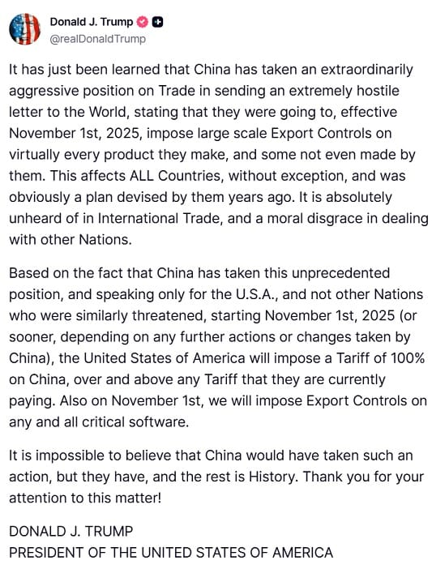

世界苦茶10月11日新闻 | 39条 | 特朗普威胁加中国100%关税

特朗普威胁加中国100%关税 | 中国对高通反垄断调查 | 中国对美船舶收取特别港务费 | 宗馥莉已辞去娃哈哈集团董事长、法人代表
苦茶数据
美元兑人民币：7.14（昨日7.13，前日7.13）
美元兑日元：152.46（昨日152.75，前日153.10）
上证指数：休市（昨日3897，前日3913）
标普500指数：休市（昨日6552，前日6735）
比特币：112414（昨日121406，前日121863）
布伦特原油：62.73（昨日65.04，前日66.43）
中国新闻
• 中国对高通公司展开反垄断调查。
中国对高通公司展开反垄断调查 2025年10月10日继英伟达之后，中国市场监管部门又锁定了美国高通公司，对其展开反垄断调查。理由是该公司收购以色列Autotalks公司未依法披露部分细节，涉嫌违反《中华人民共和国反垄断法》。10月10日，中国国家市场监督管理总局宣布，因美国高通公司收购以色列Autotalks公司未依法披露部分细节，涉嫌违反《中华人民共和国反垄断法》，市场监管总局依法对其开展立案调查。消息一出，高通股价在盘前交易中下跌2.
• 字节跳动创始人张一鸣在上海活动中罕见亮相。
字节跳动创始人张一鸣周五在上海罕见公开亮相，宣布启动一项人才孵化计划，正值华盛顿与北京就热门短视频平台TikTok剥离其美国业务逐步接近达成协议之际。根据知春创新中心的一份声明，现年42岁的张一鸣在该中心的启动仪式上发表了讲话。该中心是他与上海交通大学计算机科学教授于勇在四月共同创建的。该中心由张一鸣捐资成立，并在五月表示其目标是每年招募30名年龄在16至18岁之间的学生，为他们提供包括数学，物理。
• 随着全球峰会临近，中国被誉为妇女权利的榜样。
在全球妇女峰会倒计时之际，官方媒体将中国塑造成妇女权利的模范 国家在性别平等方面的“鼓舞人心”领导力受瞩目，全球南方领导人为应对未来挑战寻求东道国经验 在下周举行的全球妇女峰会前，中国官方媒体将该国多年推动妇女权利的进展塑造成一个典范，并指出其他国家可以从中借鉴经验。据中国方面称，数十位政府首脑，议会议长，副总理和部长级官员预计将出席。新华社刊登了一系列与参会的全球领导人的访谈，这些领导人称赞中国在妇女权利方面取得的进步，并表示期待进一步合作。柬埔寨妇女事务部长英·坎塔·帕西称即将举行的活动是推动妇女事务发展的“里程碑”，并表示她“对中国在赋权妇女方面取得的进展印象深刻”。
• 中国强烈批评美国拟议禁止中国航空公司使用俄罗斯领空。
中国对美国提议禁止中国航司飞越俄罗斯领空表示强烈不满 北京敦促美国反思其政策如何伤害美企，而不是“无理压制”他国并加重全球消费者负担 美国交通监管机构周四提议实施该禁令，称此举旨在消除中国航司通过俄罗斯飞行、走更短更便宜航线所享有的不公平优势。中国外交部表示，此类限制将不利于中美人员往来，并敦促华盛顿考虑该政策在国内的影响。“我们希望美方反思其自身政策是如何影响美国公司的，而不是无理压制其他国家、让全球消费者买单，”外交部发言人郭佳昆表示。俄罗斯以对去年2月入侵乌克兰后美国及多国禁止俄罗斯航班飞越其领空作出报复，已禁止美国航空公司及其他多家外国航司使用其领空。俄罗斯领空为连接亚洲与欧洲。
• 北京点名挑起紧张局势的台湾“网络水军”代理人。
北京最高情报机关点名台胞并指称“网络水军”挑动紧张局势 北京最高反间谍机构周五公布了一份台湾人员名单，称这些人受台湾情报机构指使，在网上散布亲独立信息、挑动两岸紧张局势。国家安全部还指控一名台湾军事情报官员及一家媒体公司的两名人员散布虚假信息、鼓吹“台独”、操纵中国大陆网络舆论，并称将对其根据《反分裂国家法》追究终身责任。国家安全部声明称，情报官员林子瑜以化名参与指挥“针对中国大陆的反宣传和破坏活动”。
• 北京抨击赖清德的T-Dome防护罩及台湾防务计划。
北京抨击赖清德的“T型穹顶”防御和台防务计划 赖清德在双十节讲话中提出提高岛内军费以遏阻跨海峡攻击 “赖的讲话颠倒是非，兜售‘台独’分裂谬论，歪曲并挑战历史事实与国际共识，再次暴露出他固执成事端、好挑衅、好发动战争的本性”大陆外交部发言人郭佳坤表示。赖政府通过武力谋独、拒绝统一的图谋“只会把台湾拖入战争危险境地”，郭说。“维护台海和平稳定需要坚持一个中国原则，坚决反对台独。中国坚决反对美方向台售武以及美台任何军事联系，这是始终明确的立场，”郭说。北京方面的国务院台湾事务办公室亦警告称，推动台独，背离一个中国原则将加剧台海紧张局势，“严重损害”台湾经济和人民福祉。台办发言人陈滨华表示。
印太新闻
• 高市早苗首相之路恐生变数。
长期的自民党与公明党联合执政联盟在周五宣告瓦解，公明党将脱离与自民党的执政联盟，令日本陷入政治危机。新任自民党党首高市早苗是否能成为日本首位女首相也将存在变数。高市早苗在不到一周前刚刚当选自民党党首，原本预期本月将在国会获得批准出任首相。但自民党与公明党的执政联盟在周五宣告瓦解，公明党宣布不再与自民党联合执政，令日本陷入一场新的政治危机。25年“自公联盟”破裂 公明党与自民党几乎连续执政长达25年，又称为“自公联盟”。
• 台湾双十庆典 赖清德喊话中国「侵略必败」。
台湾双十庆典 赖清德喊话中国“侵略必败” 2025年10月10日台湾总统赖清德在今年双十演说中，喊话中国要体现大国责任，放弃武力改变台海现状，并宣示打造“台湾之盾”防空系统。中国外交部随后回应，批评赖清德是“麻烦制造者”、“危险制造者”、“战争制造者”。台湾10月10日举办“中华民国114年国庆大会”，总统赖清德在总统府前发表任内的第二次双十演说。他在演说中以三种方式呼喊：“台湾加油！中华民国加油！中华民国台湾加油！”他也直接点名中国放弃武力改变台海现状，并特别感谢日前前往花莲光复乡救灾复原的“铲子超人”。现场出席的还有兼任筹备委员会主委的立法院长韩国瑜，前总统蔡英文，陈水扁。
• 菲律宾南部近海发生7.6级地震，可能引发海啸。
菲律宾南部海域接连发生两次强震，至少7人遇难 菲律宾马尼拉——周五数小时内，菲律宾南部同一地区在海域先后发生两次强烈地震。首场7.4级地震已造成至少7人死亡，引发山体滑坡并促使周边沿海地区疏散，出现短暂海啸警报。第二次地震初报6.8级，当局也因此发布了局部海啸警报。菲律宾地震火山研究所所长特雷西托·巴科尔科表示，两次地震均由同一断层——菲律宾海沟的活动引发，震源深度为37公里，震中位于达沃东方省马奈镇海域附近。“第二次是一个独立的地震，我们称之为‘双震’，”巴科尔科对美联社说。
科技新闻
• 德国政府拟放宽欧盟2035“燃油车禁令”。
德国政府拟放宽欧盟2035“燃油车禁令” 2025年10月10日德国汽车业面临竞争压力与电动车转型困境之际，德国政府希望在欧盟层面推动放宽2035年燃油车禁令。总理梅尔茨与副总理克林贝尔在汽车峰会后达成共识，主张为混合动力及合成燃料技术留出发展空间。这一立场赢得产业界与工会支持，但环保组织担忧此举或削弱欧洲向电动化转型的动力。德国联邦政府计划在欧盟内部推动放宽现行汽车气候法规，以回应产业界和工会的呼声。德国总理梅尔茨与副总理克林贝尔在柏林与汽车行业代表举行汽车峰会后达成一致，同意支持在2035年之后仍为搭载燃油发动机的混合动力车型保留发展空间。
• 谷歌因搜索市场的主导地位在英国面临限制。
伦敦——英国竞争与市场管理局周五确认，谷歌在网络搜索领域拥有“重大且根深蒂固的市场权力”，这意味着其在英国可能面临旨在遏制其主导地位的限制。竞争与市场管理局表示，将首次依据于一月生效的新数字市场权力，将谷歌在搜索和搜索广告领域指定为具有“战略市场地位”。监管机构表示，关于可能采取何种措施以遏制该主导地位的征求意见——称为“行为要求”——将在今年晚些时候进行。
• 欧盟新政治广告规则生效引发强烈反弹。
旨在提高线上广告透明度的新欧盟规则引发了批评浪潮，大型平台在未遵从新规的情况下选择停止投放政治广告。运动人士称，该法律将导致有害的信息损失，因为它已促使包括谷歌、Meta 和微软在内的公司对政治广告实施封锁。两党政治人物表示，这可能不利于民主辩论。欧盟委员会表示已注意到严重关切，并正在与大型科技公司继续磋商，以缓解这些非预期影响。欧盟此举的核心在于试图遏制选举期间的政治操纵和外国干预。
经济新闻
• 中国政府将对美船舶收取船舶特别港务费。
中国交通运输部发布关于对美船舶收取船舶特别港务费的公告。自 10 月 14 日起对美国的企业、其他组织和个人拥有船舶所有权或运营的船舶；美国的企业、其他组织和个人直接或间接持有25%及以上股权的企业、其他组织拥有或运营的船舶；悬挂美国旗的船舶；在美国建造的船舶，由船舶挂靠港口所在地海事管理机构负责收取船舶特别港务费。自2025年10月14日起靠泊中国港口的，按每净吨400元人民币计收；自2026年4月17日起按每净吨 640元人民币计收；自2027年4月17日起按每净吨 880元人民币计收；自2028年4月17日按每净吨1120元人民币计收。
• 特朗普威胁对中国征收额外100%关税。
特朗普威胁对中国商品额外征收100%关税 美国总统唐纳德·特朗普表示，他将从下月起对来自中国的进口商品额外征收100%的关税。在一则社交媒体帖子中，特朗普还称美国将对关键软件实施出口管制。在周五早些时候的一则帖子中，他回击了北京本周收紧稀土出口规则的举措，指责中国“变得非常敌对”，并试图将世界“控制住”。他威胁要取消与中国国家主席习近平的会晤。随后他又称并未取消，但也不确定“我们是否会举行会晤”。“无论如何我都会去，”他在白宫对记者说。特朗普的言论引发金融市场下跌，标普500指数收盘下跌2.7%，为自四月以来最大单日跌幅。中国在稀土及其他若干关键原材料的生产上处于主导地位，这些材料是汽车。
• 路透社报道称，七个欧盟成员国在2025年增加了对俄能源进口。
路透社10月10日报道，尽管欧盟正寻求减少对俄罗斯化石燃料的依赖，2025年有七个成员国对俄能源进口较去年有所增加。2025年前八个月，欧盟自俄罗斯进口的能源价值超过110亿欧元。这一数额出现在自2022年以来对俄供应依赖已减少约90%的背景下。在增加采购的七国中，法国同比增长40%，进口额为22亿欧元，荷兰进口激增72%，达到4.98亿欧元。比利时，克罗地亚，罗马尼亚和葡萄牙也提高了进口额。匈牙利则录得同比增长11%。匈牙利和斯洛伐克仍是俄罗斯石油和天然气的主要接收国，合计约占欧盟能源账单的50亿欧元。路透引述能源与清洁空气研究中心的欧俄问题专家瓦伊巴夫·拉古南丹称。
• “让中国买”：厌倦贸易战“打击”的美国大豆农敦促特朗普采取行动。
政府已承诺支持该行业——但农民仍担心错失庞大的中国市场 随着华盛顿在中国撤回购买美豆所造成的冲击上寻求通过潜在财政援助和努力多元化出口市场来缓解美国农民表示欢迎这些援助，但更希望中国的订单回归。“一年几乎都白过了，因为我们今年收成大，但没有来自中国的订单，”一位要求匿名的内布拉斯加州农民说。“农民更希望回到以往订单稳定的日子，来自中国和其他地方，不再受贸易战冲击。” “对农民，特别是大豆种植者来说，总比没有好。特朗普正在做点事来缓解他们的痛苦，”这名内布拉斯加农民说，并敦促美国总统“要么让中国购买美国农产品。
• 特斯拉上海工厂交付创历史新高，Model Y 的一款变体吸引买家。
特斯拉上海工厂9月交付创今年新高，Model Y 新车款吸引新买家 位于临港自贸区、与洋山深水港相连的该装配线9月向客户交付了共计90,812辆汽车，创今年纪录，同比增长2.8%，数据来自中国乘用车协会。与8月的83,192辆相比，作为特斯拉全球最大产能中心的上海工厂环比增长9.2%。这是自2024年12月该超级工厂交付93,766辆以来的最高水平。该数据包括中国大陆销售及出口至日本等海外市场的车辆。“随着市场竞争加剧，特斯拉在中国收复失地的努力已见成效，”上海亿友汽车服务销售经理田茂伟表示。
• 前法国部长称，美国和中国已扼杀自由贸易。
“自由贸易已结束，它死了，”前法国财政部长喊话称，欧洲需要“醒悟”，对贸易政策采取更“民族化”的做法 前法国财政部长埃里克·隆巴尔周四在巴黎表示，美国和中国已经扼杀了自由贸易，并呼吁欧盟在应对时采取更加“民族化”的贸易政策。
• 美国参议院通过一项限制英伟达和AMD向中国出口人工智能芯片的措施。
人工智能芯片公司英伟达公司和超微公司根据美国参议院通过的立法将必须确保美国公司在其产品供应上优先于中国，这对科技行业阻止该法案的努力来说是一次挫折。这项两党立法在周四晚间的一次投票中轻松获得通过。印第安纳州共和党参议员、该法案主要联署人吉姆·班克斯称，该法案旨在增强美国在前沿产业的竞争力，并遏制向中国及其他外国对手的出口。美国科技领袖和团体批评该法案，认为它反而会限制竞争并削弱创新。
• 中国监管部门加大力度遏制行业价格战。
中国监管机构加大整治无序价格竞争力度 国家发展和改革委员会和国家市场监督管理总局周四发布联合政策文件，提出一系列措施，旨在遏制部分行业内导致价格战及其他自我毁灭性降本行为的激烈竞争。文件指出：“无序竞争可能对行业发展、产品创新、质量和安全产生负面影响，不利于国民经济健康发展。” 文件称，对于“无序价格竞争问题突出的重点行业”，两部门将引导行业协会评估全行业的平均生产成本，帮助企业制定合理价格。若怀疑发生价格战，监管部门须对企业发出警示，并对无视警示的主体予以重点关注。必要时，监管机构应介入，开展成本调查和价格检查。
• 欧盟拒绝屈服于特朗普要求废除商业规则。
欧盟已表示不会屈服于华盛顿施压，撕毁其绿色法规以换取关税协议，欧盟最高贸易官员在对成员国的通报中表示。负责欧盟委员会贸易总司的萨宾·韦扬德周三在一次大使闭门会议上表示，委员会不会把一份由美国起草的文件作为谈判依据，五名获准就该限制性会议向POLITICO匿名发言的外交官和官员向记者透露。该文件由唐纳德·特朗普总统的政府起草，若采纳将要求布鲁塞尔放弃那些要求美国公司制定应对气候变化计划并消除其供应链中环境与人权侵害的规则。《金融时报》周三报道说，白宫在该文件中称该立法为“严重且不必要的监管越界”，并“对美国公司施加了重大经济和监管负担”。
• 日经评论：全球汽车制造商必须留在中国，这样他们才能在全球有竞争力。
本文刊发在日经亚洲，作者汉斯·格雷梅尔是《Automotive News》亚洲版编辑，并合著了《碰撞轨道：卡洛斯·戈恩与颠覆汽车帝国的文化战争》。对国际汽车制造商来说，投资中国曾经是毫无疑问的选择。2000年代初，美国、欧洲、日本和韩国的汽车厂商纷纷涌入中国市场。随着中国迅速成长为全球最大的汽车市场，尽管政府规定外资品牌必须与本地企业合资，但这些“外来者”依然迅速抢占市场份额并实现盈利。如今，外国品牌在中国“淘金”已不再容易。仅在过去五年间，外国汽车制造商的命运就彻底逆转。截至2020年，国际品牌在中国轻型汽车销量中的占比仍超过60%。但到了去年，这一比例已下降至约35%。
• 空中巴士主力机型交付量半世纪来首超波音。
空中巴士主力机型交付量半世纪来首超波音 2025/10/10 欧洲空中巴士的主力客机「A320」的累计交付量超过了美国波音的「737」。对最初为抗衡美国航空产业而由法国与西德共同出资成立的空中巴士而言，这是约半个世纪以来首次实现交付量逆转。波音深陷品质问题，在新型机开发上出现延迟，双方的差距有可能进一步拉大。飞机分析师罗布·莫里斯根据英国航空调查公司Cirium的数据推算后的结果显示，截至10月8日，空中巴士中型客机A320系列的累计交付量达到1万2260架，首次超过波音737系列，成为全球最畅销的机型。
• 优衣库预计连续6年创利润新高，将继续在美涨价。
运营优衣库的迅销集团于10月9日发布消息称，预计2026财年合并净利润将较上财年小幅增长，达到4350亿日元。在预计连续6年刷新最高利润的情况下，令人担忧的是将全面受到川普关税影响的北美业务。该公司打算通过涨价来抵消关税的影响，但同时也隐藏着在全球最大市场引发消费下滑的风险。预计2026财年销售收益将增长10%，达到3.75万亿日元。2025财年北美业务的营业收入为2711亿日元，同比增长25%。在美国，提高关税前的库存已基本见底。在迅销在东京都内召开的记者会上。
• 宗馥莉已辞去娃哈哈集团董事长、法人代表。
俄乌战争
• 美国参议院通过9250亿美元国防法案，并在其中提议向乌克兰提供5亿美元。
美国参议院批准9250亿美元国防法案，提议为乌克兰拨款5亿美元 据《纽约时报》10月9日报道，美国参议院批准了2026财年总额为9250亿美元的国防预算法案，提议将对乌克兰的安全援助增加至5亿美元。该法案较众议院版本增加了1亿美元，并将对乌克兰的援助延长至2028年，表明国会对基辅的持续支持。新资金将通过“乌克兰安全援助倡议”拨付——这是国防部主导的一项计划，通过与美国防务公司签订合同向乌克兰提供武器。众议院此前于9月10日通过了一项8900亿美元的国防政策法案，为五角大楼对乌克兰的安全援助拨款4亿美元。经议员达成协议以推动原本陷入僵局的立法后。
• 俄罗斯大规模打击导致基辅及乌克兰各地断电。
俄方大规模打击导致基辅及乌克兰多地断电 俄罗斯当晚发射的导弹和无人机袭击导致乌克兰首都基辅及其他八个地区的大范围断电。基辅当局称，随后城市有超过54万户恢复供电，但仍有许多家庭无电。市长维塔利·克里琴科表示，市内有12人受伤。在南部的扎波罗热地区，一名7岁男童被炸死，另有7人受伤。中部切尔卡瑟州也有10人受伤。俄国防部称，其对乌克兰发动的“规模性”精准武器打击——包括高超音速导弹——目标是被俄方称作乌克兰“军工综合体”使用的能源设施。自2022年全面入侵乌克兰以来，俄方在冬季来临前不断升级对乌克兰能源设施及交通基础设施的袭击。针对本轮俄袭，乌克兰总统泽连斯基重申呼吁盟友采取果断行动。
• 乌克兰与荷兰签署联合生产无人机的备忘录。
泽连斯基10月10日在X上宣布，乌克兰与荷兰签署了联合生产无人机的谅解备忘录。自2022年俄罗斯发动全面入侵以来，无人机已成为乌克兰防御的关键组成部分，为战场提供重要的侦察、目标定位和战术支援。新协议旨在扩大基辅的本土无人机生产能力，以维持并增强这些行动。泽连斯基与荷兰国防部长鲁本·布雷克尔曼斯会面，敲定了该协议，并将无人机生产称为“我们双边合作中最有前景的领域之一”。乌克兰总统感谢荷兰政府，首相和人民的支持，指出自俄全面入侵以来，荷兰的援助总额已近90亿美元。泽连斯基还强调荷兰对PURL倡议约6亿美元的贡献，称其“发出信号并为其他伙伴树立榜样”。会谈中，双方讨论了扩大该倡议。
• 弗拉基米尔·普京表示，唐纳德·特朗普应得诺贝尔奖。
俄罗斯总统弗拉基米尔·普京称唐纳德·特朗普“为世界和平做了很多事”，并抨击诺贝尔委员会在拒绝将其最高奖项授予这位美国领导人后。挪威机构周五将著名的和平奖授予委内瑞拉反对派领袖玛丽亚·科丽娜·马查多，回敬了公开并激烈争取该荣誉的特朗普。该宣布招致普京的斥责，他在访问塔吉克斯坦期间对记者表示，委员会的“公信力在很大程度上已丧失”。
• 俄罗斯对 GPS 的干扰已成为新常态。
伊丽莎白·布劳是大西洋理事会的高级研究员，畅销书《告别全球化》的作者，并为POLITICO撰写专栏。今年一月至四月间，东波罗的海地区整整四分之一的航班遭遇了GPS干扰。迄今这些事件尚未酿成航空灾难，靠的正是飞行员的高超技艺。这再次说明了俄罗斯对人命的冷漠无视。克里姆林宫清楚受影响国家绝不会容许对俄航班实施同样的行为。但我们依然可以共同减轻这些危险手段造成的损害。
世界新闻
• 委内瑞拉反对派领袖玛丽亚·科里娜·马查多获得诺贝尔和平奖。
委内瑞拉反对派领导人玛丽亚·科里娜·马查多获得诺贝尔和平奖 委内瑞拉反对派领导人玛丽亚·科里娜·马查多获授2025年诺贝尔和平奖。58岁的马查多被诺贝尔委员会称为“近来拉美最非凡的公民勇气典范之一”。她长期反对委内瑞拉总统尼古拉斯·马杜罗·莫罗斯，马杜罗12年的执政在许多人眼中被视为不具合法性。马查多在一份声明中说：“这一对所有委内瑞拉人民斗争的巨大认可，激励我们完成我们的任务：征服自由。” 未获奖的还包括美国总统唐纳德·特朗普。特朗普对获得该项殊荣的渴望并不隐晦，并公开宣称自己结束了七场战争。该奖项的提名于一月截止。白宫一名官员回应称。
• 美国表示卡塔尔将在爱达荷州建设空军设施。
美国已敲定一项协议，允许卡塔尔在爱达荷州建造空军设施，美国国防部长皮特·赫格塞斯宣布。他表示，该设施将设在北美西北部的芒特恩霍姆空军基地，海湾国家的飞行员将在那里接受F-15战机的训练。“这只是我们伙伴关系的又一例证，”赫格塞斯在周五于五角大楼与卡塔尔外长萨乌德·本·阿卜杜勒拉赫曼·阿勒萨尼会晤时说。赫格塞斯还称赞卡塔尔在特朗普总统主导的促成加沙停火和人质换回努力中发挥了“重要作用”。在以色列与哈马斯数月间接谈判中，卡塔尔与埃及和土耳其一道，一直积极斡旋。
• 美国将向以色列派遣200名军人监测加沙停火。
美方将派200名士兵赴以色列监督加沙停火 美方官员表示，最多200名已驻扎在中东的美军将被调往以色列，协助监督加沙的停火。美军将在以色列设立一个多国联合作战小组，称为民军协调中心，官员称该中心可能包括来自埃及、卡塔尔、土耳其和阿联酋的部队。一位高级官员表示，美方部队不会进入加沙，补充称美国的角色是建立一个联合控制中心，以“整合”进入的多国部队。以色列政府已批准与哈马斯达成的加沙协议的第一阶段，该阶段已促成停火并实现人质与囚犯的释放。该联合作战小组将由驻该地区的美国中央司令部领导，旨在监督停火协议的进展并协助协调人道主义援助。一位官员表示。
• 特朗普建议因防务开支问题将西班牙“逐出”北约。
美国总统唐纳德·特朗普10月9日表示，他可能建议将西班牙逐出北约，声称该国未能达到国防开支要求。总统在与芬兰总统亚历山大·斯图布会晤时发表上述言论，一方面称赞芬兰提高了国防开支，另一方面批评西班牙是“落后者”。“西班牙——你得打电话给他们，弄清楚为什么他们是个落后者，”美国总统说。“他们也做得不错，你知道的。因为我们做了很多事，他们也过得还行。”“他们没有不做到这一点的借口。坦率地说，也许你们应该把他们从北约踢出去。”长期以来，特朗普指责北约成员国在军费上投入不足，过度依赖美国。他一直主张将国防开支目标大幅提高，远高于2%的标准。在北约6月峰会上。
• 葡萄牙地方选举有望成为欧洲极右翼的又一胜利。
五个月前，葡萄牙提前举行全国大选，极右党派Chega成为议会第二大力量。本周日，930万葡萄牙选民将再次走向投票站，这次是全国性的地方选举。选情将异常胶着，里斯本和波尔图两大城市的领先候选人在民调中不相上下。与此同时，极右在该国被忽视的南部和内陆地区有望取得重大进展，那里的选民越来越支持该党反建制和反移民的言论。尽管Chega已在葡萄牙和欧洲议会拥有议员，但尚未掌控任何市政厅。本周日的选举可能决定该党能否将影响力从里斯本和布鲁塞尔进一步扩展，也可能突显出一股欧洲趋势：极端势力借主流政客无法解决欧盟范围住房危机等问题而巩固权力。
• 乌尔苏拉·冯德莱恩面临与欧洲议会达成的一项严苛新协议。
布鲁塞尔——乌尔苏拉·冯德莱恩轻松击退了批评者，但她与欧洲议会的关系将永远改变。在她第二任期中政治上最为受挫的几周之一，欧盟委员会主席顶住了两项不信任动议以及来自其所属保守党议员的叛变。她仍然稳居职务，且在斗争中甚至获得了更强的支持，但这要付出代价。她现在不得不比以往任何时候—including她和她的前任——更认真地对待长期被视为欧盟三大机构中最弱一环的议会。而就在此时，议会的声音正在增强，极右翼团体如“欧洲爱国者”等在议会中的影响力也在上升。
• 美国众议长约翰逊在电视直播中遭两党选民轮番斥责，脸色苍白。
美国众议长约翰逊在C-SPAN电视台的直播连线节目中，遭到了来自不同政治立场选民的“公开鞭挞”，包括一位情绪激动的共和党军人母亲在内的观众，就各种问题严厉指责了他。来自路易斯安那州的共和党人约翰逊在这场罕见的C-SPAN电视台的《华盛顿日志》直播节目上显得明显紧张，毕竟这是24年来众议院议长首次在这个节目中接听公众的现场提问。最令人震撼的对话来自“萨曼莎”，她自称是来自弗吉尼亚州贝尔沃堡的共和党军人母亲。她强忍泪水，指责约翰逊在政府拨款延期的情况下，让军人和他们的家属陷入困境。
• 法国政坛混乱中胜者已经很清楚：极右领导人玛丽娜·勒庞。
金融时报分析说，随着法国陷入一场政治危机，从一个政府动荡到另一个，总统马克龙深陷其中，而始终有一方受益：玛丽娜·勒庞和她领导的极右翼政党国民联盟。就在马克龙任命的第三位新总理于周一辞职数小时后，勒庞就将国民联盟塑造成不仅准备执政的政党，更是能够在混乱中恢复国家稳定的力量。“国民联盟呼吁选举，并不是为了自身利益，”勒庞在一段视频讲话中说道，身旁摆着法国国旗。她呼吁马克龙打破僵局，重新举行议会选举。“我们呼吁选举，是为了让国家摆脱这条致命的死胡同，是为了让国家行动有明确方向。” 尽管马克龙预计将在周五前再次任命新总理，议会选举的可能性暂时减弱，而国民议会的僵局仍未破解。目前仍无法确定。
• 马克龙再次任命勒科尔努为法国总理。
法国政治肥皂剧周五的最新一集以与本周开端相同的方式收场：塞巴斯蒂安·勒库尔努仍是总理，但身边没有政府阵容。法国总统埃马纽埃尔·马克龙在周五晚些时候重新任命勒库尔努为总理，距他那次令人震惊的辞职不到一周。勒库尔努在X上确认，他“出于职责”接受了这份工作，并表示将“尽一切可能在年底前为法国拿出预算案”。